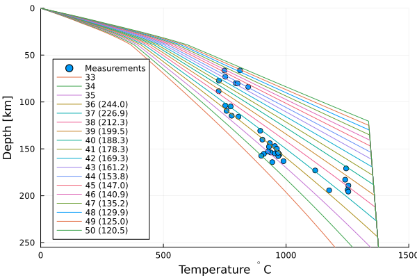
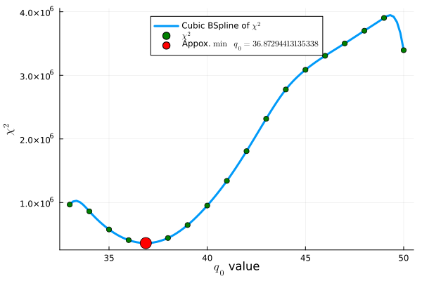
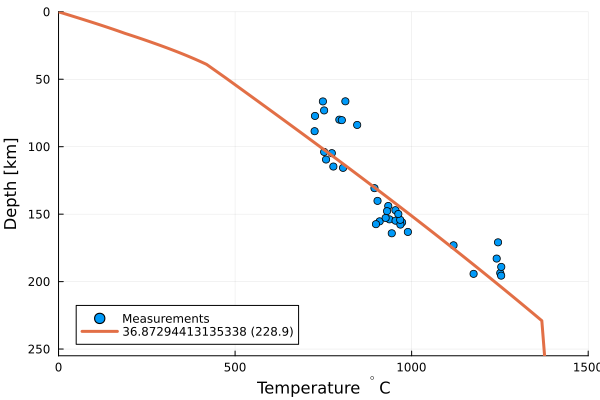

Model results graphs
We used stock Julia/Python Matlab like graphs to show the results.

In the legend, each line marked by a q0 value and the depth, where the geotherm crosses the adiabat.

Spline approximation of Chi^2 (deviation assessment between measured and calculated values at the same temperature value) approximation. BFGS (a Qusi Newton method) used for figuring the suboptimal value for q0 is used.

A suboptimal q0 aproximation with a spline.